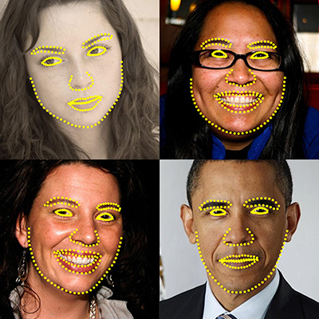

One Millisecond Face Alignment with an Ensemble of Regression Trees

In Proc. IEEE Conference on Computer Vision and Pattern Recognition (CVPR 2014) [
Paper]
Abstract
This paper addresses the problem of Face Alignment for
a single image. We show how an ensemble of regression
trees can be used to estimate the face’s landmark positions
directly from a sparse subset of pixel intensities, achieving
super-realtime performance with high quality predictions.
We present a general framework based on gradient boosting
for learning an ensemble of regression trees that optimizes
the sum of square error loss and naturally handles missing
or partially labelled data. We show how using appropriate
priors exploiting the structure of image data helps with efficient
feature selection. Different regularization strategies
and its importance to combat overfitting are also investigated.
In addition, we analyse the effect of the quantity of
training data on the accuracy of the predictions and explore
the effect of data augmentation using synthesized data.
Code
An implementation of the algorithm is available in
dlib C++ library.
Alternatively
DEST includes an implementation with some additional tracking features.
Benchmark*
| STASM | CompASM | EXEM | RCPR | SDM | ESR | ERT (Ours) |
| LFPW | - | - | 0.040 | 0.035 | 0.035 | 0.034** | 0.038 |
| HELEN | 0.111 | 0.091 | - | 0.065 | 0.059 | 0.059 | 0.049 |
| IBUG*** | - | - | - | - | 0.075 | 0.075 | 0.064 |
* The reported results are the average landmark distance from
the ground-truth landmarks normalized by the inter-ocular distance. In
all the experiments its is assumed that the bounding box of the face is
given. In practice we used OpenCV for detecting the faces. For the cases
that the face detector failed, we generated a bounding box with at
least 80% overlap with the ground truth bounding box.
** Our reimplementation of ESR performed significantly worse
than the result reported in their original paper (~0.043 as opposed to
0.034).
*** We only used the AFW subset in addition to the training set
of LFPW, and HELEN for training. For test we used IBUG set with test of
LFPW and HELEN.
STASM, CompASM:
Interactive Facial Feature Localization.
EXEM:
Localizing Parts of Faces Using a Consensus of Exemplars.
RCPR:
Robust Face Landmark Estimation Under Occlusion
SDM:
Supervised Descent Method and its Applications to Face Alignment.
ESR:
Face Alignment by Explicit Shape Regression.
Demo
Bibtex